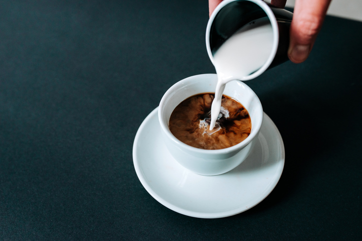
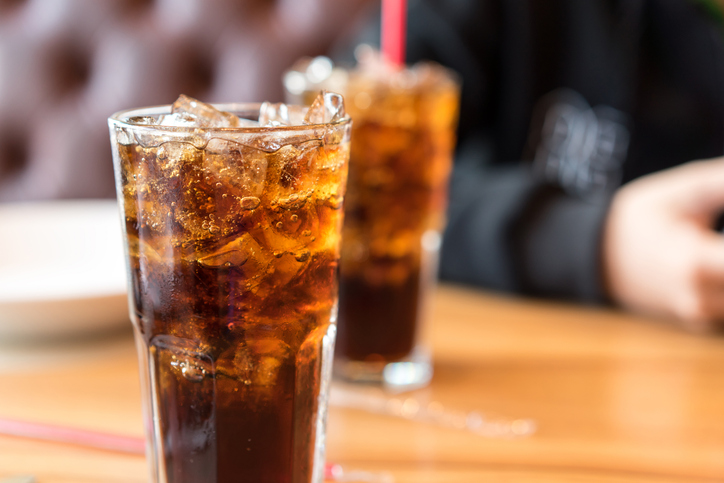
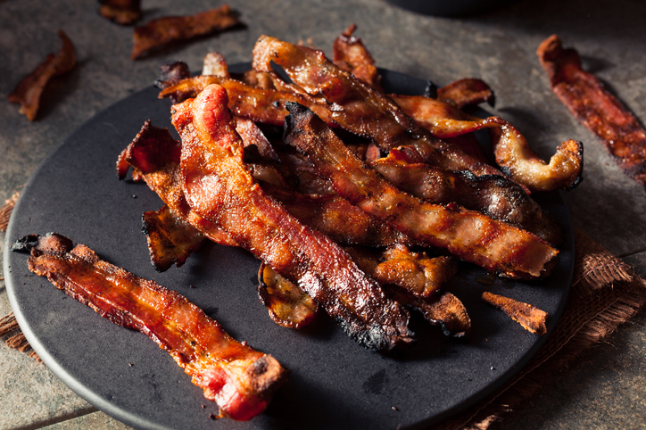
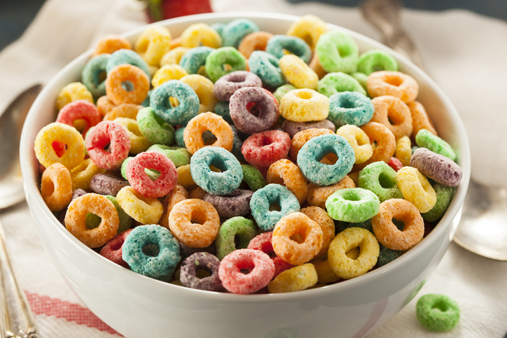
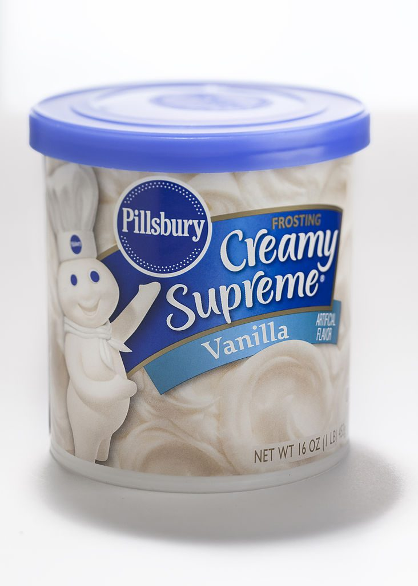

You're Probably Eating Some of the Most Unhealthy Foods in the World.
Even though most of us get a baseline education in nutrition — or at least an outdated version of the
food pyramid — in school, it’s easy to go through life without a clear understanding of what is and isn’t
healthy. It doesn’t help that the clever marketing of food corporations looking to make more money advertises
healthier options, but those foods are full of artificial ingredients, dangerous artificial sugars, and processed
ingredients your body doesn’t know how to digest. The following are 15 of the unhealthiest foods on the planet,
including an item that’s often recommended for its alleged health benefits.
1. Coffee creamer.

Troubling ingredient: Canola oil?
A lot of people need coffee first thing in the morning. But have you ever peeked at the ingredients
on your fancy coffee creamer before pouring it in your coffee? You might be surprised to find the first
three ingredients are often water, sugar, and then canola oil. Why is canola oil bad for you? Well, it has
very little nutritional value, and it does have unhealthy fats.
Instead try: Half and half, regular cow’s milk, or a plant-based creamer
4. Diet soda

Troubling ingredient: Aspartame!
It’s so tempting to reach for the diet soda instead of regular pop if you’re trying to cut calories
and lose weight. But with diet soda, it is vital to consider the cost. Your zero calorie drink is full
of other harmful ingredients. Aspartame is a known carcinogen. And aspartame has the opposite effect on
your weight loss goals since it causes your blood sugar to spike, triggering your body to store fat.
Instead try: Sparkling water, coffee, infused water, or even a treat like dark chocolate
5. Cured bacon and sausage

Troubling ingredient: Nitrites and nitrates!
Everyone loves bacon. If you don’t, we don’t want to be your friend. Jokes aside, bacon and sausage can be
bad for you due to the way they are processed. The processing creates inflammatory compounds, and nitrates
and nitrites cooked at high heat can be carcinogenic.
Instead try: Cook your breakfast meats at lower temperatures and look for uncured varieties!
6. Sugary cereals.

Troubling ingredient: Added sugars, refined carbs, and BHT/BHA!
Let’s start with the sugar content. You might think cereal is better for you than a donut, but you’d be wrong
if you like to fill your bowl with Fruity Pebbles or Cinnamon Toast Crunch. Plus, some cereals have additives
(butylated hydroxytoluene and butylated hydroxyanisole) that are banned in most other countries as they are
considered carcinogenic. There’s no need to put that in your bodies, friends.
Instead try: Oatmeal with fresh berries and honey or maple syrup for sweetness!
7. Canned frosting.

Troubling ingredient: Artificial coloring, soybean oil, propylene glycol!
As with many foods from the center aisles of the grocery store, there are a lot of unhealthy added ingredients in frosting.
Propylene glycol found in many frostings is connected to kidney failure. And artificial colors (even in your white frosting)
are linked to things as mild as hyperactivity to as severe as cancer.
Instead try: Making your own frosting is super easy and even more delicious!